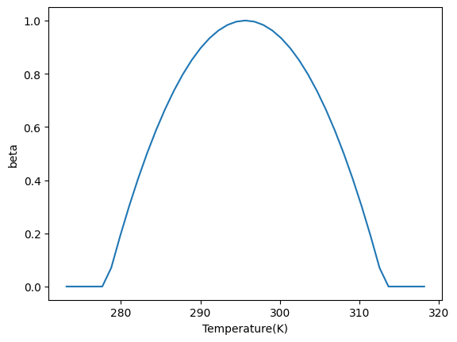
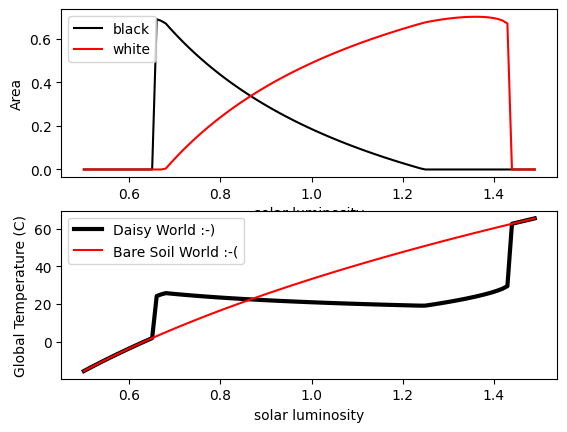

Biogeophysical feedbacks: Daisy World#
Acknowledgements: Code is adapted from a python script by Andrew Bennett
Introduction#
Daisy world is a toy model of the planet designed to show how negative feedbacks with the biosphere can lead to a stable planet temperature over a wide range of solar luminosities. It was introduced by Watson and Lovelock (1983, Tellus B: Chemical and Physical Meteorology 35.4 (1983): 284-289., hereafter WL83) as an example of the Gaia theory, which proposed a solution to the weak young sun paradox. You are also referred to the excellent review paper, Wood et al. (2008), Rev. Geophys.,46, RG1001, doi:10.1029/2006RG000217, referred to W08 hereafter.
In the early stage of the planet, when life had already established, the sun was about 30% weaker than today, and yet mean temperatures must have remained within the rough range of 0-40C which allow life to persist. The Gaia theory proposed a negative, “stabilizing feedback”, whereby the presence of life reduces temperature variability, thus permitted the continued presence of life.
In response to criticism to the theory, WL83 introduced daisy world. Quite simply, a planet is occupied by two species of daisy with different albedos (see figure above), but the same temperature response function where growth is maximized at a certain temperature (22.5C in the paper). Black daisies are warmer than white due to their lower albedo.
The model is simple, consisting of two ODEs that describe the evolution of the black and white daisies as a function of the temperature and three diagnostic equations that describe mean albedo of the planet, the resulting mean temperature assuming energy balance, and the local temperatures of the daisy patches, which are a function of the flower albedo.
Before we start we need to import the modules we will need for the code, numpy and matplotlib for the graphics, and we define a few constants.

Daisyworld image from PSU, David Bice.
The model#
The model is simple, consisting of two ODEs that describe the evolution of the black and white daisies as a function of the temperature and three diagnostic equations that describe mean albedo of the planet, the resulting mean temperature assuming energy balance, and the local temperatures of the daisy patches, which are a function of the flower albedo.
Before we start we need to import the modules we will need for the code, numpy and matplotlib for the graphics, and we define a few constants.
import numpy as np
import matplotlib.pyplot as plt
keloff=273.15 # to convert between K and deg C
sigma=5.67e-8 # S-B constant
S0=1000 # solar constant W/m**2
transport=20 # q' in equation 7 of WL83, lineared diffusion heat transport - this relates local albedo perturbations to temperature perturbations
maxloop=100 # number of iterations to allow daisies to equilibrate.
luminosity=np.arange(0.5,1.5,0.01) # range of luminosities ratios over which we will loop, starting from low to high
A module that was compiled using NumPy 1.x cannot be run in
NumPy 2.0.0 as it may crash. To support both 1.x and 2.x
versions of NumPy, modules must be compiled with NumPy 2.0.
Some module may need to rebuild instead e.g. with 'pybind11>=2.12'.
If you are a user of the module, the easiest solution will be to
downgrade to 'numpy<2' or try to upgrade the affected module.
We expect that some modules will need time to support NumPy 2.
Traceback (most recent call last): File "/Library/Developer/CommandLineTools/Library/Frameworks/Python3.framework/Versions/3.9/lib/python3.9/runpy.py", line 197, in _run_module_as_main
return _run_code(code, main_globals, None,
File "/Library/Developer/CommandLineTools/Library/Frameworks/Python3.framework/Versions/3.9/lib/python3.9/runpy.py", line 87, in _run_code
exec(code, run_globals)
File "/Users/tompkins/Library/Python/3.9/lib/python/site-packages/ipykernel_launcher.py", line 17, in <module>
app.launch_new_instance()
File "/Users/tompkins/Library/Python/3.9/lib/python/site-packages/traitlets/config/application.py", line 1043, in launch_instance
app.start()
File "/Users/tompkins/Library/Python/3.9/lib/python/site-packages/ipykernel/kernelapp.py", line 725, in start
self.io_loop.start()
File "/Users/tompkins/Library/Python/3.9/lib/python/site-packages/tornado/platform/asyncio.py", line 215, in start
self.asyncio_loop.run_forever()
File "/Library/Developer/CommandLineTools/Library/Frameworks/Python3.framework/Versions/3.9/lib/python3.9/asyncio/base_events.py", line 596, in run_forever
self._run_once()
File "/Library/Developer/CommandLineTools/Library/Frameworks/Python3.framework/Versions/3.9/lib/python3.9/asyncio/base_events.py", line 1890, in _run_once
handle._run()
File "/Library/Developer/CommandLineTools/Library/Frameworks/Python3.framework/Versions/3.9/lib/python3.9/asyncio/events.py", line 80, in _run
self._context.run(self._callback, *self._args)
File "/Users/tompkins/Library/Python/3.9/lib/python/site-packages/ipykernel/kernelbase.py", line 513, in dispatch_queue
await self.process_one()
File "/Users/tompkins/Library/Python/3.9/lib/python/site-packages/ipykernel/kernelbase.py", line 502, in process_one
await dispatch(*args)
File "/Users/tompkins/Library/Python/3.9/lib/python/site-packages/ipykernel/kernelbase.py", line 409, in dispatch_shell
await result
File "/Users/tompkins/Library/Python/3.9/lib/python/site-packages/ipykernel/kernelbase.py", line 729, in execute_request
reply_content = await reply_content
File "/Users/tompkins/Library/Python/3.9/lib/python/site-packages/ipykernel/ipkernel.py", line 422, in do_execute
res = shell.run_cell(
File "/Users/tompkins/Library/Python/3.9/lib/python/site-packages/ipykernel/zmqshell.py", line 540, in run_cell
return super().run_cell(*args, **kwargs)
File "/Users/tompkins/Library/Python/3.9/lib/python/site-packages/IPython/core/interactiveshell.py", line 2961, in run_cell
result = self._run_cell(
File "/Users/tompkins/Library/Python/3.9/lib/python/site-packages/IPython/core/interactiveshell.py", line 3016, in _run_cell
result = runner(coro)
File "/Users/tompkins/Library/Python/3.9/lib/python/site-packages/IPython/core/async_helpers.py", line 129, in _pseudo_sync_runner
coro.send(None)
File "/Users/tompkins/Library/Python/3.9/lib/python/site-packages/IPython/core/interactiveshell.py", line 3221, in run_cell_async
has_raised = await self.run_ast_nodes(code_ast.body, cell_name,
File "/Users/tompkins/Library/Python/3.9/lib/python/site-packages/IPython/core/interactiveshell.py", line 3400, in run_ast_nodes
if await self.run_code(code, result, async_=asy):
File "/Users/tompkins/Library/Python/3.9/lib/python/site-packages/IPython/core/interactiveshell.py", line 3460, in run_code
exec(code_obj, self.user_global_ns, self.user_ns)
File "/var/folders/5f/gmzfbr6d0cbb3tn3_mkpdfnh0000gq/T/ipykernel_64084/1617222649.py", line 2, in <module>
import matplotlib.pyplot as plt
File "/Users/tompkins/Library/Python/3.9/lib/python/site-packages/matplotlib/__init__.py", line 113, in <module>
from . import _api, _version, cbook, _docstring, rcsetup
File "/Users/tompkins/Library/Python/3.9/lib/python/site-packages/matplotlib/rcsetup.py", line 27, in <module>
from matplotlib.colors import Colormap, is_color_like
File "/Users/tompkins/Library/Python/3.9/lib/python/site-packages/matplotlib/colors.py", line 56, in <module>
from matplotlib import _api, _cm, cbook, scale
File "/Users/tompkins/Library/Python/3.9/lib/python/site-packages/matplotlib/scale.py", line 22, in <module>
from matplotlib.ticker import (
File "/Users/tompkins/Library/Python/3.9/lib/python/site-packages/matplotlib/ticker.py", line 138, in <module>
from matplotlib import transforms as mtransforms
File "/Users/tompkins/Library/Python/3.9/lib/python/site-packages/matplotlib/transforms.py", line 49, in <module>
from matplotlib._path import (
---------------------------------------------------------------------------
AttributeError Traceback (most recent call last)
AttributeError: _ARRAY_API not found
---------------------------------------------------------------------------
ImportError Traceback (most recent call last)
Cell In[1], line 2
1 import numpy as np
----> 2 import matplotlib.pyplot as plt
5 keloff=273.15 # to convert between K and deg C
6 sigma=5.67e-8 # S-B constant
File ~/Library/Python/3.9/lib/python/site-packages/matplotlib/__init__.py:113
109 from packaging.version import parse as parse_version
111 # cbook must import matplotlib only within function
112 # definitions, so it is safe to import from it here.
--> 113 from . import _api, _version, cbook, _docstring, rcsetup
114 from matplotlib.cbook import sanitize_sequence
115 from matplotlib._api import MatplotlibDeprecationWarning
File ~/Library/Python/3.9/lib/python/site-packages/matplotlib/rcsetup.py:27
25 from matplotlib import _api, cbook
26 from matplotlib.cbook import ls_mapper
---> 27 from matplotlib.colors import Colormap, is_color_like
28 from matplotlib._fontconfig_pattern import parse_fontconfig_pattern
29 from matplotlib._enums import JoinStyle, CapStyle
File ~/Library/Python/3.9/lib/python/site-packages/matplotlib/colors.py:56
54 import matplotlib as mpl
55 import numpy as np
---> 56 from matplotlib import _api, _cm, cbook, scale
57 from ._color_data import BASE_COLORS, TABLEAU_COLORS, CSS4_COLORS, XKCD_COLORS
60 class _ColorMapping(dict):
File ~/Library/Python/3.9/lib/python/site-packages/matplotlib/scale.py:22
20 import matplotlib as mpl
21 from matplotlib import _api, _docstring
---> 22 from matplotlib.ticker import (
23 NullFormatter, ScalarFormatter, LogFormatterSciNotation, LogitFormatter,
24 NullLocator, LogLocator, AutoLocator, AutoMinorLocator,
25 SymmetricalLogLocator, AsinhLocator, LogitLocator)
26 from matplotlib.transforms import Transform, IdentityTransform
29 class ScaleBase:
File ~/Library/Python/3.9/lib/python/site-packages/matplotlib/ticker.py:138
136 import matplotlib as mpl
137 from matplotlib import _api, cbook
--> 138 from matplotlib import transforms as mtransforms
140 _log = logging.getLogger(__name__)
142 __all__ = ('TickHelper', 'Formatter', 'FixedFormatter',
143 'NullFormatter', 'FuncFormatter', 'FormatStrFormatter',
144 'StrMethodFormatter', 'ScalarFormatter', 'LogFormatter',
(...)
150 'MultipleLocator', 'MaxNLocator', 'AutoMinorLocator',
151 'SymmetricalLogLocator', 'AsinhLocator', 'LogitLocator')
File ~/Library/Python/3.9/lib/python/site-packages/matplotlib/transforms.py:49
46 from numpy.linalg import inv
48 from matplotlib import _api
---> 49 from matplotlib._path import (
50 affine_transform, count_bboxes_overlapping_bbox, update_path_extents)
51 from .path import Path
53 DEBUG = False
ImportError: numpy.core.multiarray failed to import
print (maxloop)
100
Plant response function#
We now define the plant growth temperature response function. This is a quadratic curve that peaks at T=22.5C (you may change this value).
Equation 3 of WL83:
The max function ensures positive-definite growth rates, setting the growth rate to zero below about 5C and above 40C. NOTE: Be careful of the units for temperature, which switch between deg C and K in the code and paper.
This plant response function is identical for both kinds of daisies, black and white, thus the difference in growth rates can only be due to their impact on the local temperature due to their albedo.
Let’s code up the temperature response function now, note that we also define the plant death rate, which is introduced in the equations below (\(\gamma\)):
Td_ideal=22.5+keloff # peak growth rate for daisies
birth_rate_k=0.003265 #
death_rate=0.3 # fixed death rate gamma in equation 1
def birth_rate(T):
"""function to calculate birth rate"""
return max(1.0-birth_rate_k*(Td_ideal-T)**2,0.0)
tarr=np.linspace(0,45,41)+keloff
fig,ax=plt.subplots()
br=[birth_rate(t) for t in tarr]
ax.plot(tarr,br)
ax.set_xlabel("Temperature(K)")
ax.set_ylabel("beta")
Text(0, 0.5, 'beta')

The plant function types#
We now introduce some other parameters in the model, the white daisy (dw) and black daisy (db) and bare soil (bs) albedoes:
alb_dw=0.75 # white daisies albedo
alb_db=0.25 # black daisies
alb_bs=0.5 # bare soil
We perform the main loop over normalized luminosity values (so L=1 implies present day solar constant), and for each luminosity find the stable solution of daisy area and temperature.
The equations we solve in turn are:
Equation 5 of WL83, this simply states that the mean planetary albedo is an area-weighted average of the daisies and bare soil values.
where \(\alpha\) is the fractional coverage of the white daisies (dw), black daises (db) or bare soil (bs) and \(A\) is the respective albedo of each land cover type. (NOTE: We use this notation to follow WL83 and W08, but do not get confused as we usually use \(\alpha\) for albedo in the course).
We then calculate the planet mean temperature, which is a simple energy balance equation between incoming solar and emitted infrared radiation (Equation 4 of WL83) (note they are ignoring the emissivity of the grey atmosphere for simplicity, here the atmosphere is transparent to SW and IR radn, it doesn’t really change anything in the behaviour of the model).
The next step is to calculate the local temperature resulting from the presence of the daisies. In WL83 this is not explained in much detail, and we thus refer to the excellent description of W08: The local temperatures \(T_{dw}\) and \(T_{db}\) and the bare soil temperature \(T_{bs}\) are defined by making a simplifying assumption about the heat transfer, essentially a linearization of adiffusion term (refer to the 1D zonal model for ice albedo feedback). This gives a degree of connectedness to the daisy patches without introducing space explicitly. A parameter \(q\) is defined as the heat transfer coefficient in WL83, thereby defining the local temperatures as (equation 7 of WL83 or 5-7 in W08):
and similarly for the black daisies.
Now we only have to define the two key equations, which describe the birthrate of each daisy type which is a function of their optimum temperatures, using the birthrate function defined above. Each daisies has a constant death rate \(\gamma\), converting daisy coverage back to bare soil. These equations are standard for population dynamics, disease models etc. These are eqn. 1 in WL83 or eqn 2 in W08:
In the code below we note the solver is not accurate, as the system is coupled and the integration method is explicit, but it simple to understand and will do for present purposes. If you have finished the ICTP diploma course in numerical methods I/II you may like to replace this, implementing a Runge-Kutta 4th order solver for example.
# store arrays
area_dw_v=[]
area_db_v=[]
area_bs_v=[]
T_p_v=[]
T_ref=[]
area_dw=area_db=0.01 # initial conditions
#luminosity=[1]
# loop over luminosity...
for iflux,flux in enumerate(luminosity):
# initial conditions are taken from a previous run, subject to
# a minimum of 1% in case the species had died out
area_dw=max(area_dw,0.01) # white daisies can't die out
area_db=max(area_db,0.01) # black daises neither
area_bs=1.0-area_dw-area_db # bare soil fraction
delta_db=delta_dw=1
iloop=0
while (abs(delta_db)+abs(delta_dw))>1.e-8:
iloop+=1
# EQN 5: calculate weighted average albedo
alb_p=area_dw*alb_dw+area_db*alb_db+area_bs*alb_bs
# EQN 4: calculate planet mean temperature
T_p=np.power(flux*S0*(1-alb_p)/sigma,0.25)
# EQN 7: calculate local temperatures
T_db=transport*(alb_p-alb_db)+T_p
T_dw=transport*(alb_p-alb_dw)+T_p
# EQN 3: calculate birth rate beta
birth_rate_db=birth_rate(T_db)
birth_rate_dw=birth_rate(T_dw)
# EQN 1: change in daisy area
delta_db=area_db*(birth_rate_db*area_bs-death_rate)
delta_dw=area_dw*(birth_rate_dw*area_bs-death_rate)
area_db+=delta_db
area_dw+=delta_dw
# update areas
area_bs=1.0-area_db-area_dw
#print (area_db,area_dw,area_bs)
print (flux," converged after iteration ",iloop)
# store the value...
area_db_v.append(area_db)
area_dw_v.append(area_dw)
area_bs_v.append(area_bs)
T_p_v.append(T_p)
T_ref.append(np.power(flux*S0*(1-alb_bs)/sigma,0.25))
0.5 converged after iteration 39
0.51 converged after iteration 39
0.52 converged after iteration 39
0.53 converged after iteration 39
0.54 converged after iteration 39
0.55 converged after iteration 39
0.56 converged after iteration 39
0.5700000000000001 converged after iteration 39
0.5800000000000001 converged after iteration 39
0.5900000000000001 converged after iteration 39
0.6000000000000001 converged after iteration 39
0.6100000000000001 converged after iteration 39
0.6200000000000001 converged after iteration 39
0.6300000000000001 converged after iteration 39
0.6400000000000001 converged after iteration 58
0.6500000000000001 converged after iteration 134
0.6600000000000001 converged after iteration 52
0.6700000000000002 converged after iteration 633
0.6800000000000002 converged after iteration 2165
0.6900000000000002 converged after iteration 556
0.7000000000000002 converged after iteration 314
0.7100000000000002 converged after iteration 218
0.7200000000000002 converged after iteration 169
0.7300000000000002 converged after iteration 139
0.7400000000000002 converged after iteration 119
0.7500000000000002 converged after iteration 104
0.7600000000000002 converged after iteration 93
0.7700000000000002 converged after iteration 84
0.7800000000000002 converged after iteration 78
0.7900000000000003 converged after iteration 72
0.8000000000000003 converged after iteration 68
0.8100000000000003 converged after iteration 64
0.8200000000000003 converged after iteration 61
0.8300000000000003 converged after iteration 58
0.8400000000000003 converged after iteration 56
0.8500000000000003 converged after iteration 55
0.8600000000000003 converged after iteration 53
0.8700000000000003 converged after iteration 52
0.8800000000000003 converged after iteration 52
0.8900000000000003 converged after iteration 51
0.9000000000000004 converged after iteration 51
0.9100000000000004 converged after iteration 51
0.9200000000000004 converged after iteration 51
0.9300000000000004 converged after iteration 52
0.9400000000000004 converged after iteration 52
0.9500000000000004 converged after iteration 53
0.9600000000000004 converged after iteration 54
0.9700000000000004 converged after iteration 55
0.9800000000000004 converged after iteration 57
0.9900000000000004 converged after iteration 58
1.0000000000000004 converged after iteration 60
1.0100000000000005 converged after iteration 62
1.0200000000000005 converged after iteration 64
1.0300000000000005 converged after iteration 66
1.0400000000000005 converged after iteration 69
1.0500000000000005 converged after iteration 72
1.0600000000000005 converged after iteration 76
1.0700000000000005 converged after iteration 79
1.0800000000000005 converged after iteration 84
1.0900000000000005 converged after iteration 89
1.1000000000000005 converged after iteration 94
1.1100000000000005 converged after iteration 100
1.1200000000000006 converged after iteration 108
1.1300000000000006 converged after iteration 116
1.1400000000000006 converged after iteration 126
1.1500000000000006 converged after iteration 138
1.1600000000000006 converged after iteration 152
1.1700000000000006 converged after iteration 170
1.1800000000000006 converged after iteration 192
1.1900000000000006 converged after iteration 222
1.2000000000000006 converged after iteration 264
1.2100000000000006 converged after iteration 325
1.2200000000000006 converged after iteration 426
1.2300000000000006 converged after iteration 628
1.2400000000000007 converged after iteration 1248
1.2500000000000007 converged after iteration 3058
1.2600000000000007 converged after iteration 876
1.2700000000000007 converged after iteration 533
1.2800000000000007 converged after iteration 387
1.2900000000000007 converged after iteration 305
1.3000000000000007 converged after iteration 251
1.3100000000000007 converged after iteration 214
1.3200000000000007 converged after iteration 186
1.3300000000000007 converged after iteration 164
1.3400000000000007 converged after iteration 146
1.3500000000000008 converged after iteration 131
1.3600000000000008 converged after iteration 119
1.3700000000000008 converged after iteration 108
1.3800000000000008 converged after iteration 98
1.3900000000000008 converged after iteration 89
1.4000000000000008 converged after iteration 81
1.4100000000000008 converged after iteration 74
1.4200000000000008 converged after iteration 67
1.4300000000000008 converged after iteration 71
1.4400000000000008 converged after iteration 61
1.4500000000000008 converged after iteration 39
1.4600000000000009 converged after iteration 39
1.4700000000000009 converged after iteration 39
1.4800000000000009 converged after iteration 39
1.4900000000000009 converged after iteration 39
Results#
Now we just need to plot the results:
fig,ax=plt.subplots(2,1)
ax[0].plot(luminosity,area_db_v,color='black',label='black')
ax[0].plot(luminosity,area_dw_v,color='red',label='white')
ax[0].set_xlabel('solar luminosity')
ax[0].set_ylabel('Area')
ax[0].legend(loc="best")
ax[1].plot(luminosity,np.array(T_p_v)-keloff,color="black",label="Daisy World :-)",linewidth=3)
ax[1].plot(luminosity,np.array(T_ref)-keloff,color="red",label="Bare Soil World :-(")
ax[1].set_xlabel('solar luminosity')
ax[1].set_ylabel('Global Temperature (C)')
ax[1].legend()
<matplotlib.legend.Legend at 0x10fcf0640>

We see the very interesting behaviour of daisy world. Once the black daisies are established, they locally increase the temperature, and as the luminosity increases in also allows white daisies to be established. Increases in luminosity in turn increase the proportion of white daisies, which reduce the local temperature due to the higher albedo (note, higher than bare soil). The key take home of WL83 was that, relative to bare soil world (red line) the temperature is very stable. In fact you will see when you carry out some of the exercises below that the two daisies type are actually mutually beneficial in the standard set up of these model, that is “cooperative”, and can coexist across a far wider range of luminosity than is the case when a single species exists. This perhaps has important implications for the importance of biodiversity on our planet!
Questions to investigate#
- What happens if you change the albedo values of the black and/or white daisies? Try altering the albedos but keeping $A_{db} < A_{bs} < A_{dw}$. But then also try $A_{db} < A_{dw} < A_{bs}$ or $A_{bs} < A_{db} < A_{dw}$.
- Tinker with the daisy-dependent death rates and see what happens
- What happens if, after arriving at a luminosity $L$ of 1.6 you turn the sun back down again? (i.e. reverse the luminosity loop). Do the solution branches follow each other exactly, or is there a hysteresis? Why?
- What happens if for each value of luminosity you start from a near bare earth? (1% coverage for each daisy type) At which values of luminosity does the population crash occur?
- What happens if you only allow one daisy type?
- What happens if you introduce 3 (or more) daisy types?
- Watson and Lovelock introduce another experiment in which black daisies are warmer, but they cool the planet by introducing clouds. This experiment can be conducted by assuming that the TOA albedo for black daisy areas is 0.8, the daises are still warmer than white daisies due to their lower albedo (not very physical!) - See if you can reproduce fig 2 of Watson and Lovelock with this experiment. What happens to the white daisies?
- Can you introduce adaptation? You could apply random mutations to the constants in the $\beta$ plant growth function over time, perhaps introduces to a third type with a seed fraction at a particular time.
Have fun and above all, never stop asking yourself “what if?”